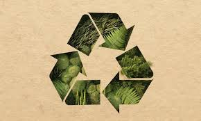

EcoLovers | Importancia del reciclaje | 7/04/2024
En Guatemala, al igual que en muchos otros países del mundo, el reciclaje se ha convertido en una herramienta vital para abordar los desafíos ambientales y sociales
que enfrentamos en la actualidad. Desde la gestión adecuada de los residuos hasta la conservación de recursos naturales, el reciclaje desempeña un papel fundamental en la
construcción de un futuro sostenible para las generaciones venideras.
1. Reducción de la Contaminación Ambiental
Uno de los beneficios más evidentes del reciclaje en Guatemala es la reducción de la contaminación ambiental. Al reciclar materiales como plástico, papel, vidrio y metal,
se evita que estos elementos terminen en vertederos o en la naturaleza, donde pueden tardar cientos de años en descomponerse y causar daños irreversibles al
medio ambiente y a la fauna local.
2. Conservación de Recursos Naturales
El reciclaje también contribuye significativamente a la conservación de recursos naturales en Guatemala. Al reutilizar materiales reciclables en la fabricación de nuevos productos,
se reduce la necesidad de extraer recursos como madera, minerales y petróleo, ayudando a preservar los ecosistemas frágiles y los hábitats naturales de la región.
3. Generación de Empleo y Desarrollo Económico
Otro aspecto crucial del reciclaje en Guatemala es su impacto en la generación de empleo y el desarrollo económico.
A medida que aumenta la conciencia sobre la importancia del reciclaje, se crean oportunidades laborales en el sector de la gestión de residuos,
el reciclaje y la fabricación de productos reciclados. Esto no solo impulsa la economía local, sino que también fomenta la innovación y la creación de empresas sostenibles.
4. Educación Ambiental y Conciencia Ciudadana
El fomento del reciclaje en Guatemala va de la mano con la educación ambiental y la conciencia ciudadana.
A través de campañas educativas, programas de separación de residuos y la promoción de prácticas sostenibles, se empodera a la población para tomar medidas concretas en la reducción,
reutilización y reciclaje de materiales, creando una sociedad más responsable y comprometida con el cuidado del medio ambiente.
5. Contribución a los Objetivos de Desarrollo Sostenible (ODS)
El reciclaje en Guatemala también está alineado con los Objetivos de Desarrollo Sostenible (ODS) establecidos por las Naciones Unidas. En particular, contribuye a metas como el consumo y
producción responsables (ODS 12), acción por el clima (ODS 13) y vida submarina (ODS 14), entre otros, demostrando su relevancia en la agenda global de sostenibilidad.
En conclusión, el reciclaje en Guatemala no solo es una práctica ambientalmente responsable, sino también una oportunidad para impulsar el desarrollo económico, promover la educación
ambiental y fortalecer la participación ciudadana en la construcción de un futuro más sostenible para todos. ¡Cada acción cuenta, y juntos podemos hacer la diferencia!
Reciclar en Guatemala no solo es una acción individual, sino un compromiso colectivo hacia un planeta más saludable y equitativo para las presentes y futuras generaciones.
¡Únete al movimiento del reciclaje y se parte del cambio que nuestro país necesita!